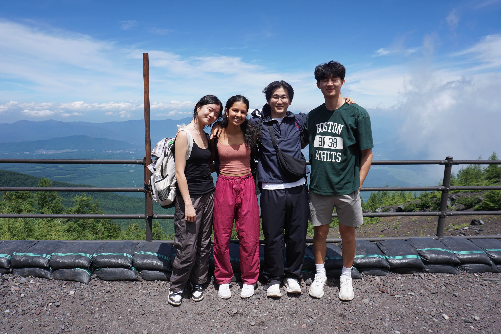

Aug 2025
Hard
Mt. Fuji - Japan's Highest
📍 Shizuoka, Yamanashi
⛰️ 3,776m
⏱️ 5 hours
Went to Japan summer of 2025 and it was one of my lifetime highlights. Took a bus up to 5th station and climbed the Yoshida Trail up Mt. Fuji under near perfect conditions.
Unfortunately, as we climbed higher and higher, my friends started falling one by one. I didn't want to go on without them so unfortunately we weren't able to make it to the top but a beautiful experience nontheless. We also saw clowns climbing the mountain lol.
Route: Yoshida Trail
Conditions: Clear and Windy :D
Highlight: FRIENDS FRIENDS